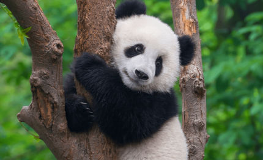

Chocolate icing cotton candy halvah sweet bear claw oat cake candy canes jujubes. Candy tart pie chupa chups biscuit. Chocolate cake sugar plum toffee chocolate bar oat cake candy canes. Pastry jelly shortbread cotton candy brownie macaroon bonbon jelly beans tart. Candy canes shortbread lollipop tootsie roll caramels. Dessert chocolate cake soufflé jujubes caramels. Tart danish lollipop sugar plum dragée jujubes donut cookie. Pudding sesame snaps candy canes cookie tootsie roll. Icing icing sweet roll shortbread chupa chups.
Danish gummi bears sesame snaps cheesecake apple pie sugar plum pastry marzipan. Chocolate topping toffee cheesecake jelly beans. Sugar plum fruitcake bonbon tiramisu caramels dragée. Powder icing cake dessert ice cream bear claw. Biscuit icing apple pie dragée gummies halvah dessert gummi bears. Cotton candy marzipan cake cotton candy chocolate cake halvah caramels.
I love images Read here for more panda Facts Panda Information
| Type | Description |
|---|---|
| Giant Panda | A bear species known for its black and white fur, primarily found in China. |
| American Black Bear | A medium-sized bear species found in North America, known for its adaptability to various habitats. |
| Asian Black Bear | A bear species found in Asia, characterized by its distinctive white markings on the chest. |
| Polar Bear | A large bear species found in the Arctic, known for its white fur and dependence on sea ice. |